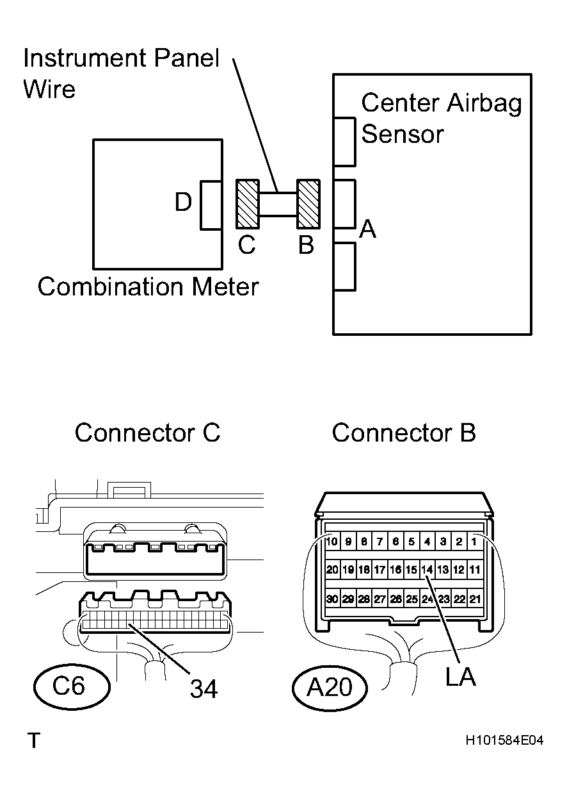

Inspection Procedure
- INSPECT BATTERY VOLTAGE
- Measure the voltage of the battery.
Standard voltage:
11 to 14 V
NG : RECHARGE OR REPLACE BATTERY
OK : Go to Next Step
- Measure the voltage of the battery.
- CHECK CONNECTION OF CONNECTOR
- Turn the ignition switch OFF.
- Disconnect the cable from the negative (-) battery terminal, and wait for at least 90 seconds.
- Check that the connectors are properly connected to the center airbag sensor and combination meter.
OK:
The connectors are connected securely.
NG : CONNECT CONNECTOR
OK : Go to Next Step
- CHECK COMBINATION METER
- Disconnect the connectors from the center airbag sensor.
- Connect the cable to the negative (-) battery terminal, and wait for at least 2 seconds.
- Turn the ignition switch ON and check the operation of the SRS warning light.
OK:
The SRS warning light comes on (goes off 6 seconds after the ignition switch is turned ON).
NG : GO TO METER / GAUGE SYSTEM
OK : Go to Next Step
- CHECK INSTRUMENT PANEL WIRE (CENTER AIRBAG SENSOR - COMBINATION METER)
- Disconnect the connector from the combination meter.
- Measure the resistance of the wire harness side connectors.
Standard resistance
TESTER CONNECTION - SPECIFIED CONDITION (RESISTANCE)Tester Connection Specified Condition A20-14 (LA) - C6-34 Below 1 Ω A20-14 (LA) - Body ground 1 MΩ or higher
NG : REPAIR OR REPLACE INSTRUMENT PANEL WIRE

Courtesy of © TOYOTA, LICENSE AGREEMENT TMS1002OK : REPLACE CENTER AIRBAG SENSOR ASSEMBLY